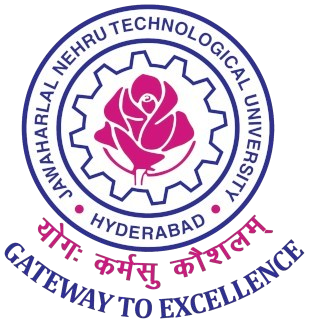
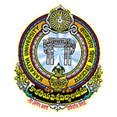

About Me
Hi.
I am Tejaswi Sirimalla.
I am 1st year Master's student in Computer Science and Engineering at JNTUH University College of Engineering, Science and Technology, Kukatpally, Hyderabad. I am equipped with a broad range of skills across software development, data analysis, and system design. I thrive in dynamic environments, quickly adapting to new technologies and contributing to diverse projects. My goal is to leverage my versatility and passion for technology to make meaningful contributions across different sectors.
Links :
Education
PROGRAM |
%/CGPA |
Year |
||
|  |
Master of Technology in Computer Science and Engineering | 9.56 |
2023 - 2025 |
|
|  |
Bachelor of Technology in Computer Science and Engineering Honorary mention: Secured University 2nd Rank in B.Tech and |
86.6% |
2015 - 2019 |
|
|
Board of Intermediate Education, Andhra Pradesh | 96.1% |
2013 - 2015 |
||
|
Board of Secondary Education, Andhra Pradesh |
9.8 |
2012 - 2013 |
Projects
-
Auto Graphical Exploratory Data Analysis(2024)
A comprehensive graphical analysis of tabular data providing key descriptive statistical measures, outliers, univariate and multivariate analysis, correlations, relevant 2D and 3D plots to understand the probability distributions. PCA and tSNE are performed to understand the relative relevance of the input features fostering analysis.
(pandas, numpy, matplotlib, plotly, bokeh, seaborn, scikit-learn) Prevention of Land Acquisition (2018)
Proposed an idea of preventing land acquisitions and developed a prototype for the same as part of hackathon held by Govenment of Telangana. The project was one among the best 2 projects selected for merit by the Governent from Kakatiya University.
(Flask, Python, HTML, CSS)
Achievements and Awards
Project Leader for various projects during graduation and for Final Year project of Graduation.
Secured 1st in paper presentation on environment in 2017 held in Kakatiya University.
Skills
Languages: C, Python, HTML, CSS
Database Technologies: MySQL, PL/SQL
Operating Systems: Linux, Windows